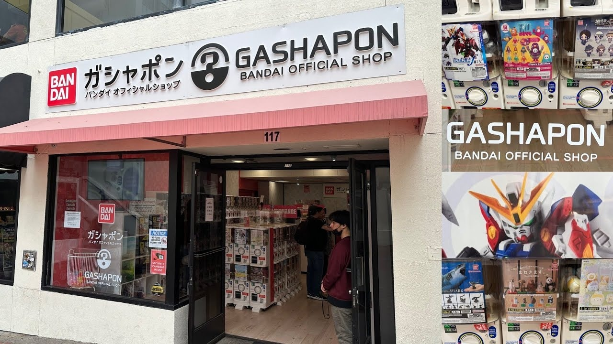

GASHAPON BANDAI OFFICIAL SHOP Akihabara
Ряды автоматов превращают маленькую покупку в лотерею: внутри капсул — персонажи, миниатюры и неожиданные повседневные предметы.
🇯🇵 Показать местному
東京都千代田区外神田1-15-9 namco秋葉原店4F
Что этоОфициальный магазин капсульных игрушек Bandai внутри namco Akihabara.
ГлавноеСерии миниатюр и персонажей, распределённые по отдельным автоматам.
Не пропуститеИзображения полного набора на лицевой панели выбранного автомата.
- Вывеску GASHAPON BANDAI OFFICIAL SHOP — на четвёртом этаже namco.
- Карточки серий — над приёмниками монет; на них показаны возможные игрушки.
- Зону «Гасяпон-но-дэпато» — рядом с официальным магазином, на том же этаже.
- 💡 Сотни автоматов с капсульными игрушками — от миниатюр и персонажей аниме до необычных брелоков; магазин расположен на 4-м этаже по адресу Sotokanda 1-15-9.
- Перед оплатой посмотрите цену и состав серии: конкретного персонажа из капсулы выбрать нельзя.
- Сверьте обозначенный на автомате способ оплаты; стоимость игрушки не является входным билетом.
История и подробности
На четвёртом этаже интересен сам ряд повторяющихся прозрачных витрин: один и тот же механизм выдаёт совершенно разные миры. В одном автомате находятся персонажи аниме, в другом — уменьшенные предметы быта. Рассмотрите плакат серии прежде, чем крутить ручку: на нём обычно видны варианты, которые случайным образом достаются покупателям.
Gashapon — бренд капсульных игрушек Bandai. Смысл покупки состоит не только в миниатюре, но и в неопределённости результата: автомат выдаёт закрытую капсулу. Витрина показывает семейство предметов, а не обещает именно тот, который вам понравился. Так маленькие вещи становятся коллекциями.
Официальный магазин открылся 1 марта 2023 года внутри namco Akihabara. Он соседствует с «Гасяпон-но-дэпато» — более широкой торговой зоной капсульных автоматов. Опубликованные 800 установочных мест относятся к двум зонам вместе; это не число разных серий и не гарантия наличия конкретной игрушки. Ассортимент меняется с поступлениями.
- 2023 — 1 марта открывается официальный магазин Bandai в namco Akihabara.